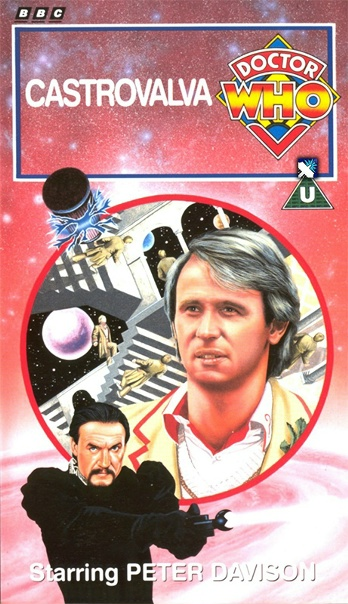
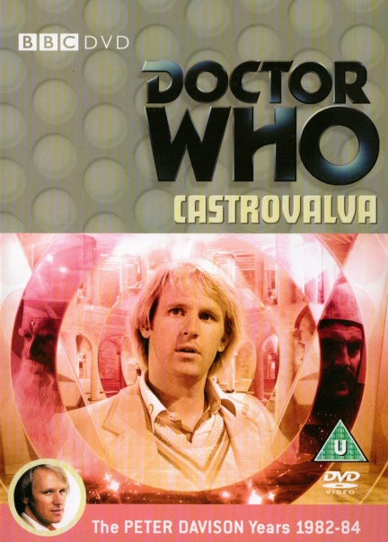
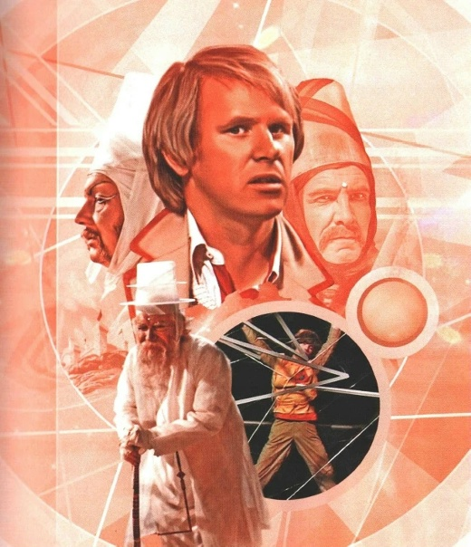
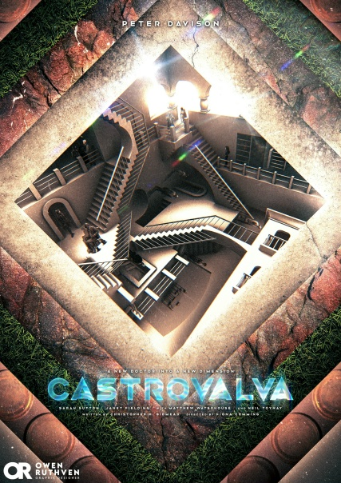

Эра Пятого Доктора (19 сезон)
<<< НАЗАД ||| 1. Кастровальва ||| ДАЛЬШЕ >>>
или
<<< НАЗАД к сериалу К9 и компания
Субтитры: Русские и Английские |  |
|---|---|
с обновленными спецэффектами Субтитры: Русские и Английские | |
с обновлением визуальных эффектов (cunningmunki) Субтитры: отсутствуют | |
+ Original [ENG] Субтитры: отсутствуют | |
Castrovalva
Дата выхода: 4-12 января 1982
Формат: 4 эпизода по 25 мин.
 |  |
Дебют Питера Дэвисона в роли Пятого Доктора. После нестабильной регенерации Доктор слаб и дезориентирован — в бреду он примеряет личности прежних воплощений. Мастер похищает Адрика, а ТАРДИС летит прямиком к моменту Большого Взрыва, и Ниссе с Тиган приходится брать управление на себя. Доктор восстанавливается в Нулевой комнате, а следы Адрика ведут в Кастровальву — странный город с запутанной архитектурой, где время и пространство ведут себя не по правилам. Пятый Доктор выбирает костюм для крикета и закрепляет стебель сельдерея на воротнике — на случай отравления.
 VHS - март 1992 |   DVD+Boxset - 29 января 2007 |  Blu-ray - 10 декабря 2018 * Версия в нашей группе |
|---|





Трейлер: